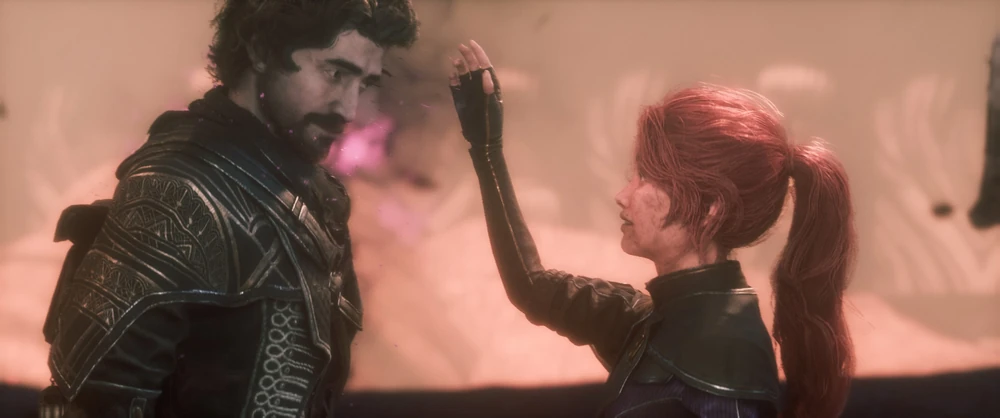

Gustave

O líder da Expedição e engenheiro, comanda seus aliados em uma
missão para
impedir que a "Pintora" pinte a morte novamente.
Biografia
Gustave cresceu sentindo-se sufocado pela presença constante da Pintora sobre Lumière. Como engenheiro, dedicou sua vida aos sistemas de defesa e agricultura da cidade, esforçando-se para proteger e prover para seu povo. Agora, como Expedicionário, dedica seu último ano de vida a derrotar a Pintora e recuperar um futuro para as crianças de Lumière.
Atributos
- Vida : 150
- Ataque : 49
- Velocidade : 212
- Defesa : 0
- Chance Crítica: 8%